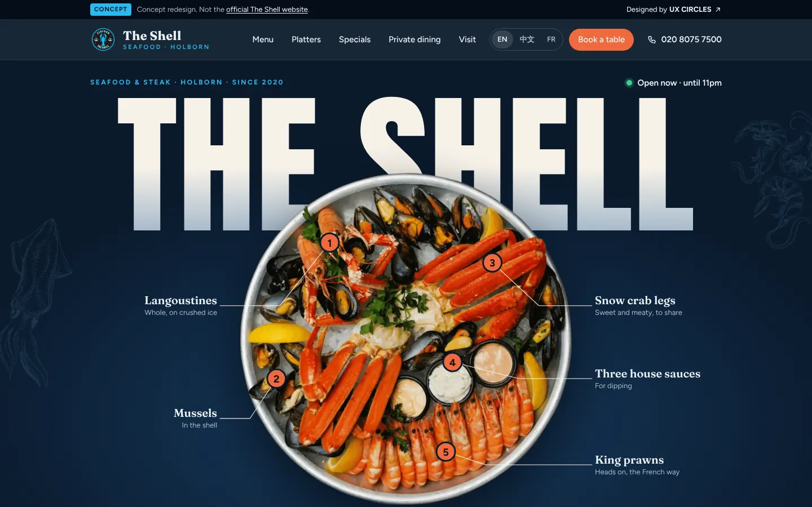

Seafood & steak · Holborn, London
The Shell
海鮮餐廳改版提案 — 英／中／法三語網站
A trilingual redesign for a seafood and steak restaurant on Southampton Row. The hero turns the signature platter into a labelled menu, and private dining gets its own enquiry page.
View concept site